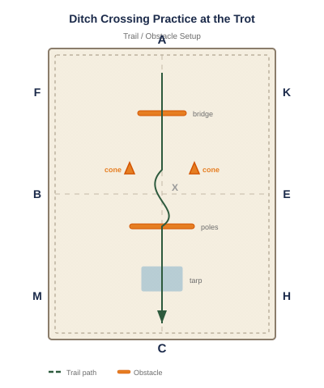

Equipment: Shallow ditch or poles simulating a ditch
Arena Diagram

Step-by-Step Instructions
If no natural ditch is available, create one with two parallel poles 2-3 feet apart.
Approach the ditch at the trot. Let the horse look down into it.
Encourage forward motion with your legs and voice. Keep your weight centered and eyes ahead.
The horse may jump the ditch the first time — that's okay. Stay balanced and allow it.
On subsequent approaches, ask the horse to trot through (or step over) more calmly.
Practice until the horse steps over or through the ditch without hesitation.
Common Mistakes to Avoid
Approaching too fast, which makes the horse more likely to refuse or overshoot.
Leaning forward over the horse's neck (dangerous if the horse stops suddenly).
Not having a secure lower leg, getting unbalanced if the horse jumps.
Getting angry after a refusal — re-approach calmly and try again.
Variations & Progressions
Gradually widen the ditch to build confidence over larger gaps.
Approach ditches at the trot for cross-country preparation.
Combine ditch crossing with a hill for a multi-challenge obstacle.
Tip: Ditches are one of the scariest obstacles for horses because they have to trust that there's solid ground on the other side. Start small and build trust.
Email This Exercise
Get step-by-step instructions, tips, and variations delivered to your inbox.